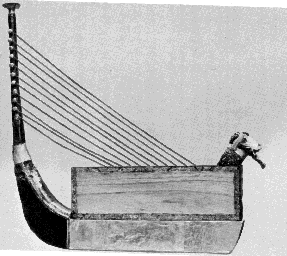

1500 BC
A tanbur is defined as "a long-necked stringed instrument with a small egg- or pear-shaped body, with an arched or round back, usually with a soundboard of wood or hide, and a long, straight neck". The tanbur probably developed from the bowl harp as the neck was straightened out to allow the string/s to be pressed down to create more notes.